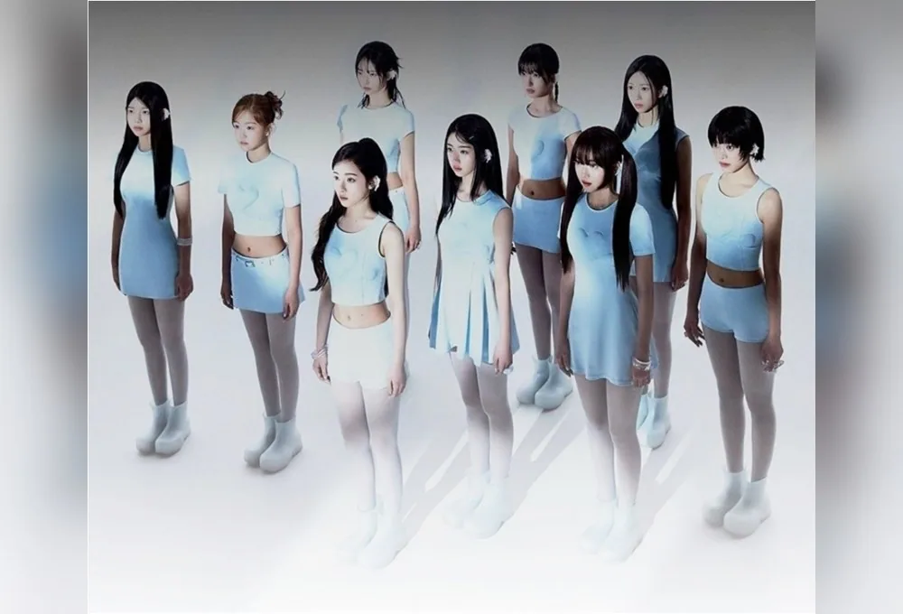
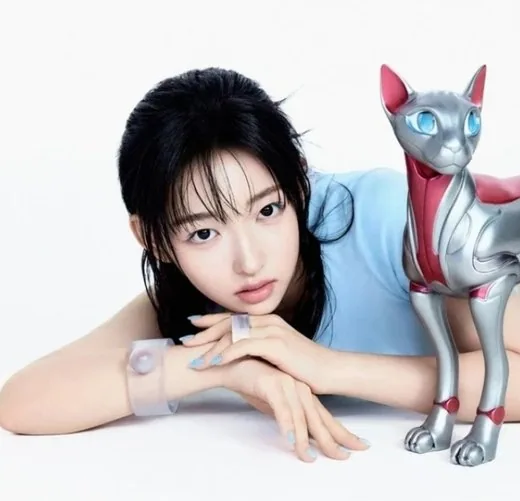

Young
Young · Membre · Sud-coréenne

K-POP
Découvre A2O LITE et les profils de ses membres sur IBASE Asian Pop.
Ouvrir la fiche interactiveHistoire : A2O LITE (에이투오 라이트) est un girl group multinational de 9 membres du label A2O Entertainment, fondé par Lee Soo-man, le fondateur de SM Entertainment : Young, Himeki, Vora, Xili, Rada, Merci, Ayune, Oa et Aijing. Les membres viennent de Corée du Sud, de Chine, du Japon, de Thaïlande et des États-Unis, et ont entre 13 et 18 ans. Le groupe a été annoncé le 8 octobre 2026, en même temps que le boys group A2O SOUL, puis présenté lors du showcase mondial « WELCOME TO SOULITE From A2O SOUL A2O LITE » le 12 octobre 2026 au KINTEX de Goyang. Son premier single digital « NEON », produit par Yoo Young-jin, est sorti le 13 octobre 2026. Sources : Soompi, allkpop, KFriday, Sports Kyunghyang.
Débuts : 13 octobre 2026 (single digital « NEON »)
Agence : A2O Entertainment
Young · Membre · Sud-coréenne
Himeki · Membre · Japonaise

Vora · Membre · Sud-coréenne
Xili · Membre · Chinoise
Rada · Membre · Non communiqué
Merci · Membre · Chinoise
Ayune · Membre · Sud-coréenne
Oa · Membre · États-Unis / Japon (double nationalité)
Aijing · Membre · Chinoise